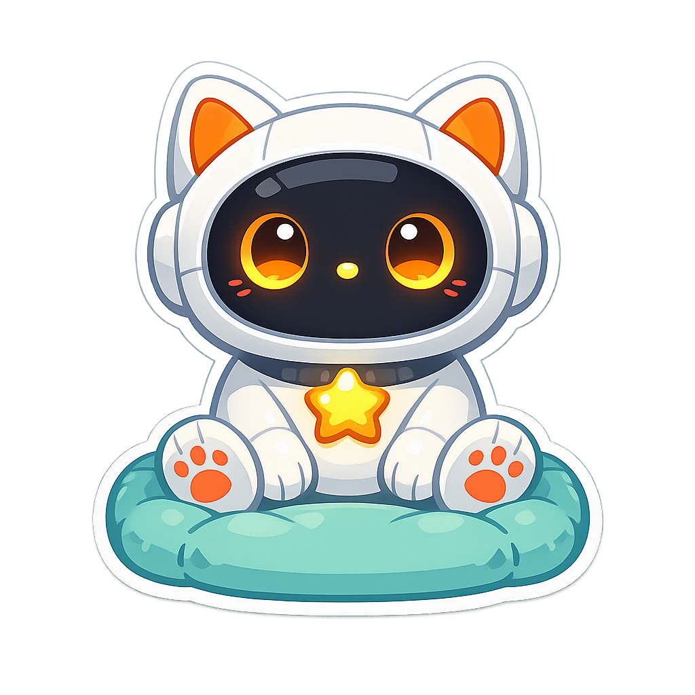
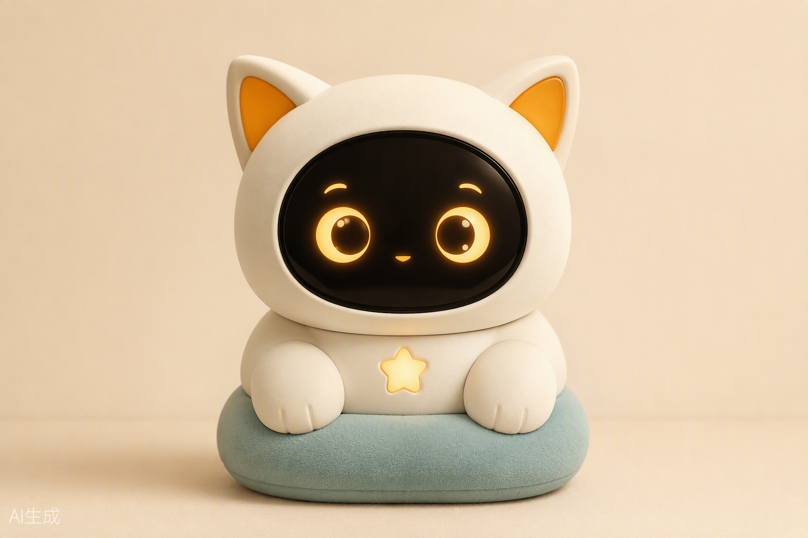
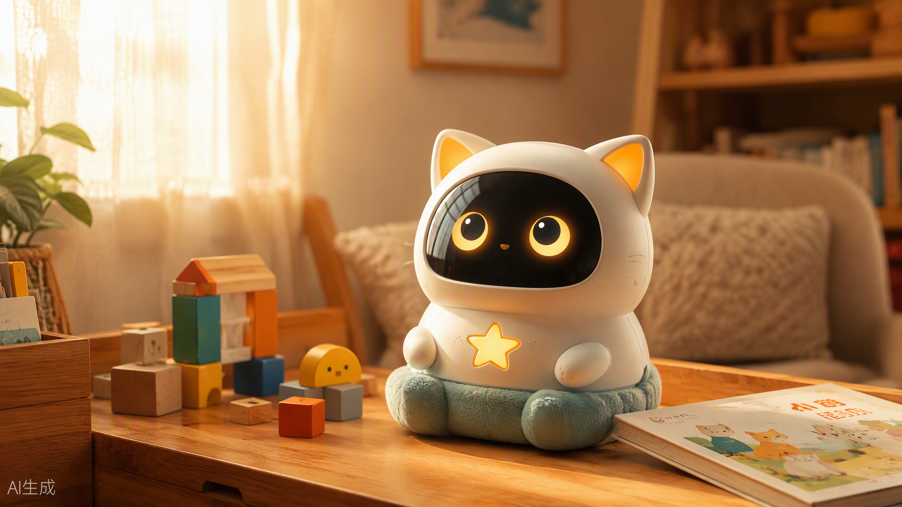

融资路演材料 · 2026
CARE AUTISM TOGETHER
星童猫咪
AI 驱动的自闭症家庭干预伙伴
软件小程序已上线跑通 · 硬件原型与技术链路就绪
软硬一体，让每个家庭都请得起一位「懂孩子的干预专家」
第一步 · 软件已上线 ✓
→
第二步 · 硬件原型已就绪

Peter 张程 · +86 13159877586 / +852 44358635
市场机会 · MARKET
一个庞大而长期被忽视的人群
1300 万+
中国自闭症谱系障碍人群
中国残联 2023 年残疾人普查口径
300-500 万
0-14 岁儿童患者
《中国自闭症教育康复行业发展状况报告》
20 万/年
新增患者速度
美国 CDC（2025）：每 36 名儿童中即有 1 名确诊
诊断率提升 + 公众认知增强，家庭干预需求正在快速显性化
数据来源：中国新闻网 ·《2025 年度儿童发展障碍康复行业蓝皮书》；智研咨询（2025-12）；美国 CDC（2025）
星童猫咪 · 02
痛点 · PROBLEM
家庭干预，卡在「人」上
1:130
残联在册康复教师与患儿比例
30 万康复人才缺口 · 每周最低 40 小时干预强度，持续 2-3 年
孩子不愿沟通，家长难以理解他们有正常的听力，却对亲人的呼唤无动于衷；家长难以沟通，更难共情孩子的世界。
家长缺乏专业知识，容易错误干预不合理的干预反而加剧病情；52.4% 的家庭有一人放弃工作全职照看，身心与经济双重承压。
专业机构缺口大、价格高、不及时持证专业人员全国仅约 1000 人，平均一名教师要服务 2500 个孩子；机构费用高昂，超半数家庭难以承担。
父母、孩子、社会的三元缺失 → 干预不及时，星童难以融入社会
数据来源：中国新闻网（2026-04）；北京大学第六医院贾美香主任医师公开访谈；《中国孤独症家长需求调查问卷》
星童猫咪 · 03
解决方案 · SOLUTION
软硬一体：同一个大脑，两个入口
第一步 · 软件
已上线 ✓ v1.3
自闭症儿童视角的家庭干预助手 · 微信小程序
AI 以「孩子」身份与家长演练对话，专家 Agent 逐句点评并生成报告。8 页全功能小程序、多专家矩阵、RAG 循证知识库、积分商业化均已跑通。
第二步 · 硬件
链路已打通
AI 玩具形态的干预伙伴 ·「小星」
把干预能力装进孩子愿意亲近的玩具：玩具端一站式语音 API 已实现，「小星玩伴」Agent 与安全红线已上线，固件基于 xiaozhi-esp32 开源生态（29k★）。
软件验证需求与专业壁垒 → 硬件放大场景与商业价值
同一套专家矩阵与知识库服务两端：边际成本递减，数据双向回流
开源大模型的成熟，让专业级家庭干预第一次具备低成本规模化的可能。
星童猫咪 · 04
软件产品 · PRODUCT（已上线）
自闭症儿童视角下的家庭干预助手
01
孪生场景演练家长描述真实场景，AI 以「孩子」身份回应，针对性解决场景困惑——先懂孩子，再教孩子。
02
交互式系统学习28 门循证干预课程、42 节互动课，按孩子档案个性化排序，讲师 Agent 对话式授课。
03
周报总结 · 社区交流每次互动生成结构化报告；家长社区沉淀真实干预案例，同伴支持不再孤军奋战。
RAG 知识强化DSM-5 标准、干预指南与专业语料检索增强
孪生星童生成基于档案生成个性化「数字孪生」交互对象
多专家协作6 位 Agent 专家矩阵协同场景理解与建议
商业化已跑通：注册送 30 积分 · 演练 5 积分/场 · 课程 2 积分/节 · 周报 3 积分/期；微信登录 + 积分中心全部上线
星童猫咪 · 05
硬件原型 · HARDWARE PROTOTYPE
「小星」—— 住进孩子世界的干预伙伴

小星 V1 原型渲染（设计演绎自 Hugging Face Reachy Mini 的机器人语言 → 猫形 IP）
🐱 软硅胶猫耳 情绪灯效：平静呼吸光 / 开心彩虹光，由「小星玩伴」Agent 的 emotion 字段实时驱动
👀 大圆面屏 温暖琥珀色 LED 大眼睛，可预期、不吓到孩子；动效极简，符合 ASD 儿童感觉友好原则
⭐ 胸口星星灯 正向强化的视觉锚点：孩子完成一个干预小目标，星星亮一次
🧸 毛绒底座 可拥抱的触感，雾青布艺 + 奶油机身，融入卧室与客厅场景
硬件底座 ESP32-S3 + INMP441 麦克风 + MAX98357A 喇叭，BOM ¥60-100；固件基于 xiaozhi-esp32 开源生态（29.4k★）
星童猫咪 · 07
硬件场景 · IN DAILY LIFE
从客厅到卧室，干预嵌进日常

小星在儿童书桌的场景渲染：与积木、绘本自然共处的家庭成员
情绪安抚与陪伴崩溃时第一时间响应，用熟悉的角色声音安抚与转移注意
日常干预引导把 App 里家长学到的方法，变成玩具在真实生活里的自然引导与正向强化
行为数据记录互动数据回流档案，周报自动生成，干预效果第一次可量化追踪
AI 玩具市场2024 年 246 亿 → 2030E 850 亿元，CAGR 超 20%；2025 年以来赛道融资超 50 起、金额超 200 亿元
数据来源：央视财经（2025-11）；中商产业研究院（2025）；新华网（2026-04）；跃然创新（BubblePal）获 2 亿元 A 轮（中金领投）
星童猫咪 · 08
技术架构 · TECH（已实现）
级联架构：语音层让路，专家大脑掌权
孩子/家长说话玩具麦克风 / 小程序语音
→
语音层ASR 听清 · TTS 说好（云端百炼 / 自部署 FunASR·CosyVoice 双轨）
→
多专家 Agent 矩阵场景理解者 · 心理学检索者 · 儿童模拟者 · 观察专家 · 总结专家 · 小星玩伴
→
RAG 循证知识库DSM-5 · 干预指南 · 专业语料
为什么不是端到端黑盒？自闭症干预有安全红线：孩子听到的每一句话都必须经过循证专家矩阵，内容可控、可审计、有边界。级联架构让干预专业性成为壁垒，而非交给通用模型自由发挥。
已验证的安全机制「小星玩伴」Agent 内置安全红线：识别自伤/伤害线索 → 温柔安抚 + alert 预警家长。COSTAR Prompt 框架保证输出质量与责任边界。
模型底座：开源大模型 + 领域语料微调（FT）+ 检索增强（RAG）· 云端 / 端侧双部署形态 · 玩具端一站式 API POST /api/voice/turn 已上线
星童猫咪 · 09
商业模式 · BUSINESS MODEL
三条收入线，从订阅到软硬一体
C 端家庭订阅App 会员制：孪生演练 + 系统课程 + 周报；积分制已上线（演练 5 分/课程 2 分/周报 3 分）。对标机构干预费用的零头。
B 端机构 SaaS康复机构的「AI 助教」：家庭延伸干预工具与师训支持，缓解 30 万人才缺口；按席位/机构年费授权。
硬件 AI 玩具「硬件 + 订阅制内容」已被跃然创新验证；玩具一次性销售 + ¥19-29/月大脑订阅，软件订阅用户自然转化。
路径设计：C 端订阅验证付费意愿 → B 端机构建立专业背书与渠道 → 硬件放大客单价与数据壁垒。三条线共用同一套专家矩阵与知识库，边际成本递减。
星童猫咪 · 11
市场规模 · MARKET SIZE
从千亿家庭支出切入，聚焦可服务市场
TAM
1000 亿元/年
中国自闭症家庭康复干预总支出
SAM
300 亿元
家庭端数字化干预 + AI 玩具交集
SOM · 5 年目标
3 亿元
10 万付费家庭 × 3000 元/年 ARPU
测算口径TAM：约 300 万患儿家庭 × 年均干预支出 3 万元（假设值）· SAM：AI 玩具 2025 年 290 亿元 + 数字疗法家庭端渗透 · SOM：10 万付费家庭 × 3000 元/年 ARPU（假设值）。以上为测算假设，可按路演口径调整。
数据来源：中商产业研究院（2025）；智研咨询（2024-12）；TAM/SOM 为本团队基于公开数据的测算假设
星童猫咪 · 12
竞争格局 · COMPETITION
错位竞争：专业干预 × AI 个性化的空白带
| 玩家 | 干预专业性 | 家庭场景 | AI 个性化 | 硬件形态 | 价格门槛 |
|---|
| 大米和小米等机构连锁 | 强（线下康复） | 弱（以机构为主） | 弱 | 无 | 高 |
| 恩启 / ALSOLIFE 等线上平台 | 中（课程与评估） | 中 | 弱-中 | 无 | 中 |
| 通用 AI 玩具（跃然 BubblePal 等） | 弱（泛陪伴） | 强 | 中 | 有 | 低 |
| 星童猫咪（本项目） | 强（专家矩阵+循证库） | 强（家庭即主场） | 强（档案级个性化） | 原型已就绪 | 低 |
机构连锁专业但贵且不进家庭；线上平台便宜但缺乏个性化与陪伴；通用 AI 玩具有场景但没有干预专业性。星童猫咪卡在三者交集的空白带。
星童猫咪 · 13
路线图 · ROADMAP
三步走：软件验证 → 商业闭环 → 硬件放大
2026 H2 · 软件公测
· 小程序 v1.3 已上线（8 页全功能 + 积分商业化）✓
· 云端语音接入，演练页语音模式
· 专家顾问网络组建
· 1000 个种子家庭，打磨干预内容
· 自闭症干预语料库 V1
2027 · 商业化 + B 端
· 付费订阅上线，验证单位经济模型
· 签约康复机构，SaaS 试点
· AI 玩具打样（xiaozhi 生态固件 + ESP32-S3）
· 「小星」品牌音色复刻
· 3C 认证
2027-2028 · 硬件量产
· AI 玩具量产上市
· 全双工语音升级（火山豆包 SC2.0）
· 数据飞轮全速运转
· 探索海外华语家庭市场
为什么是现在：开源大模型把专业干预边际成本打到接近零；AI 玩具供应链（广东产业带）与资本热度均已成熟——两端条件第一次同时成立。
星童猫咪 · 14
让每一颗星星
都被温柔地看见
CARE AUTISM TOGETHER
星童猫咪团队 · 为 10000 组家庭挽回幸福
Peter 张程 · +86 13159877586 / +852 44358635